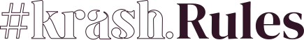
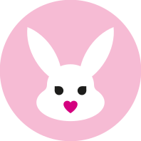

¿Quiénes somos?
Krash Kosmetics, fundada en agosto de 2018, es la primera marca de maquillaje sin género en España.
Creada con el objetivo de servir a todas esas personas que mantienen la industria de la cosmética viva,
pero que hasta ahora no han estado representadas en campañas, comunicación, expositores, etc.
Nuestra marca, de origen gaditano, ha conseguido el hito de llegar a Sephora siendo la primera marca de 'makeup' española en entrar en el gran gigante y meca de la belleza.

Diverso, transfeminista, antirracista y anticapacista.
Sabemos que muchas marcas recurren al #pinkwashing durante fechas señaladas como el Orgullo para lavar su imagen y parecer más inclusivas y diversas de lo que realmente son. En Krash estamos completamente en contra de esta práctica, aportando todos nuestros recursos a la comunidad los 365 días del año. Porque a día de hoy, no sólo queda mucho por lo que luchar, sino muchos derechos ya conseguidos que quieren arrebatar.
Nos diferenciamos del resto de marcas de maquillaje convencionales porque no testamos en animales, fabricamos productos totalmente veganos y válidos para todo tipo y tono de piel. Nuestra filosofía se basa en que el maquillaje no tiene género, es una forma de expresión artística.

Nuestra historia
En Krash somos una familia. Lo pasamos en grande tanto en la oficina como fuera de ella.
Conoce a nuestro CEO, Álvaro Kruse:
"En 2009, con tal sólo 15 años, recuerdo ir por primera vez a mi perfumería de confianza, nervioso y con sudor en las palmas de las manos, a hacerme con mis primeros productos de maquillaje. Sin embargo, por aquel entonces, que un chico se maquillase no era algo tan común, algo que daba pie a una sensación de rechazo por parte de toda persona que me atendía.
Desde ese momento, supe que era necesario crear Krash Kosmetics: una marca en la que sentirte seguro, no importa como te identifiques, tu físico, el color de tu piel o tu preferencia sexual. A día de hoy, me enorgullece decir que hay niños de 15 años que encuentran en Krash lo que yo no pude encontrar en su día."
Álvaro, Fundador & CEO, Krash Brands.
 Everyone
Everyone